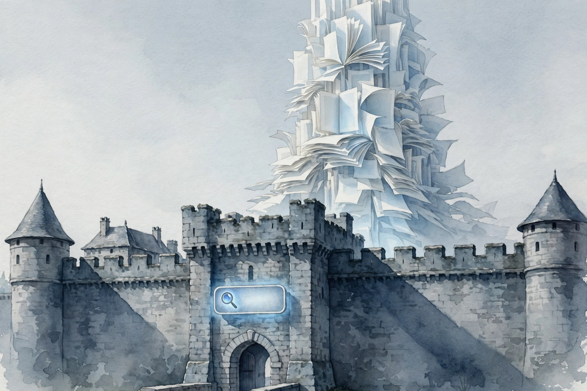
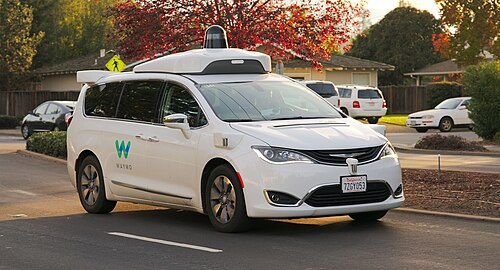
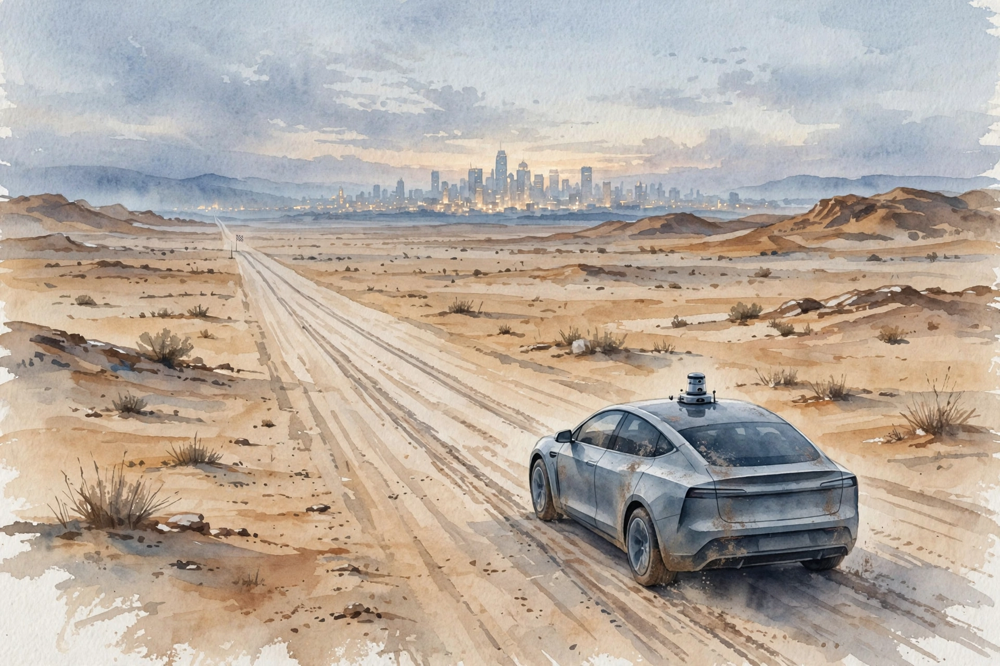

Acquired · Episode 4 · Companion
Google Part III: The AI Company
Google invented the transformer, published it, watched its authors leave to build OpenAI, and now must decide whether to kill the most profitable business in history before someone else does. This companion follows the nearly four-hour episode chapter by chapter.
Listen. The official Acquired episode audio (3 hr 54 min). Chapter times follow the episode's official YouTube chapter marks. Times with ~ are proportional estimates within their chapter.
Source fact A claim from the episode transcript. Interpretation My read on what it means. Chapter times follow the episode's official YouTube chapter marks. Times marked ~ are proportional estimates within their chapter, since the transcript carries no timestamps.

The Dilemma, Stated Plainly
Source fact Ben opens with a thought experiment. Imagine a profitable business with giant margins on every unit sold, in one of the largest markets in the world. You are a monopoly in that market with 90 percent share and deep lock-in, a monopoly as defined by the US government. Then your research lab invents something that, combined with your older inventions, creates a product much better than your current one for most purposes. Your scientists published the research out of pure benevolence, so startups commercialize it fast. Of course you rebuild your product around the new invention. Except you have no idea how to make the new product anywhere near as profitable as the old cash machine.
That is Google in 2025. The invention is the transformer, from the Google Brain team in 2017. The episode calls it perhaps the most classic textbook case of the innovator's dilemma ever: the entire AI revolution, OpenAI and ChatGPT, Anthropic, Nvidia hitting all-time highs, depends on one research paper Google published. And the strange part: ten years ago Google held the densest concentration of AI talent in the world, and today it holds maybe the best collection of assets anyone could ask for. Top-tier model in Gemini. Its own cloud at $50 billion in revenue. Its own AI chip in the TPU, the only scaled deployment of AI chips besides Nvidia GPUs. Its own data centers. Distribution through search, Android, and billions of users.
Interpretation The question for the next four hours: with every asset on the board, does the company with the winning hand win?
Toy: the innovator's dilemma calculator
The dilemma as arithmetic. Set how likely AI is to eat search, and how profitable AI could become, and see which strategy the numbers prefer. Illustrative model, not a forecast.
Larry Always Thought It Was an AI Company
Source fact The AI thread goes back to the founding. Larry Page's father was a computer science professor who earned his PhD in machine learning at the University of Michigan, back when the field was deeply unfashionable. In late 2000 or early 2001, Google engineer Urs Hölzle had lunch with Ben Gomes and a new hire, Noam Shazeer. Noam also held a machine learning PhD. The company was already accumulating the rare people who took the field seriously.
Then the hit factory: from 2003 to 2013, Gmail, Maps, and a run of products the episode says no company matched in a ten-year span. Then a striking gap: about ten years with no new famous products until Gemini. The company that could ship anything stopped shipping, right as its research lab produced the most important invention in decades.
An early sign of the AI appetite: by the mid-2000s, one early natural-language project consumed 15 percent of Google's entire data center infrastructure. And Jeff Dean coded up his implementation of AdSense in a week, because he is Jeff Dean, unlocking billions in new revenue overnight by serving the same ad corpus on third-party pages.
Google Brain: The Talent Assembly
Source fact In 2010 and 2011, Andrew Ng spent a day a week on Google's campus and bumped into Jeff Dean. Dean described the language-model work. Ng described Stanford's work. They founded Google Brain in 2011. Larry Page thought deep learning would completely change the whole industry, and told his team to really go big, which the episode says effectively gave the hiring effort a blank check to secure the best researchers possible.
Larry's acquisition instincts showed early. A group inside Stanford's computer science department prepared to start a company, with term sheets from Benchmark and Sequoia in hand. Larry came over and said, in the episode's telling: what if we just acquire your company before it is even started, in the form of signing bonuses? The researchers agreed, probably a very good decision on their part.
One early Brain result: unsupervised learning on 10 million randomly selected YouTube frames, training on 2,000 computers using 16,000 cores. The model built representations so good that one neuron at the highest level fired on images of cats, though nobody had ever told it what a cat was.
AlexNet: The Big Bang
Source fact In 2012 the Toronto team bought two Nvidia GeForce GTX 580 gaming cards off the shelf, rewrote its neural network in CUDA, and entered the ImageNet competition. The previous best error rate was 25 percent. AlexNet hit 15 percent. A 40 percent improvement in one year, on consumer hardware. Jensen Huang calls it the big bang of modern AI, and the episode agrees: it showed the world that two gaming cards could overturn decades of computer vision.
Google's response was money. The company settled on a plan to order 40,000 GPUs from Nvidia for $130 million. The price tag was large enough that the request rose to Larry Page, who personally approved it even though finance wanted to kill it. Context the episode gives: Nvidia's total revenue was $4 billion and its market cap was $10 billion. One order was over 3 percent of Nvidia's revenue. Ben's observation: Google handed Nvidia the tell that neural networks were not a research toy but a business-grade investment.
Then the talent auction. Four bidders chased Geoff Hinton's DNNResearch lab, DeepMind among them. The researchers chose Google and stopped the bidding at $44 million: this is more than enough money, we choose you. The episode notes it reads like Google's own Dutch auction IPO process in miniature.
The 40 percent leap
ImageNet error rates, 2011 versus 2012. Two gaming cards did this. Hover for detail.
Source: Acquired, Google Part III, 47:05. Two GeForce GTX 580 cards, CUDA rewrite.
DeepMind: The One That Got Away, Then Did Not
Source fact DeepMind began as an AGI startup. Demis Hassabis had spent a year at the video game studio Bullfrog Productions, where he created the commercially successful game Theme Park. Peter Thiel, after a talk, invited the founders to pitch Founders Fund the next day. Founders Fund led the seed round at about $2 million, and would later put massive amounts of money into OpenAI itself.
In late 2013, Elon Musk called Demis Hassabis and offered to buy the company on the spot with Tesla stock. Tesla's market cap was about $20 billion at the time, and the stock has run about 70 times since. DeepMind declined, partly because Musk wanted them working on Tesla autonomous driving and they did not want that.
Google acquired DeepMind in 2014. The episode's framing: the fourth bidder in the DNNResearch auction was itself acquired by Google. The talent concentration became total. The episode values the acquisition in hindsight at something like $500 billion, putting it beside Instagram and YouTube among the greatest acquisitions of all time.
The TPU: Reduced Precision at Planetary Scale
Source fact With neural nets exploding across the fleet, Jeff Dean told Urs Hölzle they needed another Google, and the alternative was a new type of chip customized for one use case: matrix multiplication, a tensor processing unit. The core insight is reduced computational precision. Neural networks do not need exact arithmetic. The TPU takes a number like 4586.8272 and rounds it to 4586.8, or even just 4586. Less precision per operation means more operations per chip, which lets Google scale its data centers without doubling its entire footprint.
The tradeoff is absolute: a TPU cannot do graphics or general GPU workloads. It is useless for anything but neural nets. Google accepted that because its data centers run neural nets at planetary scale. The TPU is the only scaled deployment of AI chips in the world besides Nvidia GPUs, and it makes Google the only company with both a frontier model and its own AI chip. Someone in Ben's research put it as a rule: without a frontier model or an AI chip, you are a commodity in the AI market.
Attention: Read Everything First
Source fact The technical centerpiece of the episode is a chain of failures, and Google Translate was the test bed. Jeff Dean took Translate's average sentence time from 12 hours to 100 milliseconds, which the episode calls the first large language model used in production: it predicted search queries as you typed. The team then rebuilt Translate on recurrent neural networks, throwing away the old codebase wholesale, and got a big improvement. But RNNs forgot things too quickly. The fix was LSTMs, long short-term memory networks, which keep a persistent memory as they process text. In 2016, LSTMs cut Translate's error rate by 60 percent.
The problem: LSTMs were computationally intense and did not parallelize well, and everything after AlexNet pointed at parallelization as the future. Researcher Jakob Uszkoreit proposed broadening attention: instead of focusing on the immediate words, tell the model to pay attention to the entire text, then predict the next word from the whole context. This is how professional human translators work: read the whole original first, understand the passage, then translate with full context in mind. It needs enormous compute, but it is extremely parallelizable.
They called it the transformer for two reasons: it literally transforms a chunk of information, and they loved Transformers as kids.
The Rewrite That Scaled
Source fact Noam Shazeer, the lunch-table PhD from 2001, joined the transformer project. Before him the implementation existed but did not beat LSTMs. Noam rewrote the entire codebase from scratch, and the transformer crushed the LSTM system. Bigger models kept getting better. It scaled. Within a year, the team built BERT, one of the first large language models.
The episode corrects a false narrative: Google did plenty with the transformer. BERT and MUM went into search quality and moved the needle on query comprehension. What Google did not do was treat it as a wholesale platform change. It used the invention as a feature, not a foundation.
The episode pauses here for Jeff Dean facts, the internal Google tradition modeled on Chuck Norris facts: how did Jeff Dean go home over a weekend, rewrite some entire giant distributed system, and fix all of Google's problems? The throughline of the episode is that Google's impossible execution had names attached.
The Paper That Left the Building
Source fact Then the fateful decision: publish. Attention Is All You Need, a nod to the Beatles song, went out to the world. By 2025 it was cited over 173,000 times, the seventh most cited paper of the 21st century, with every paper above it on the list out much longer. Within a couple of years, all eight authors of the transformer paper had left Google to start or join AI startups, including OpenAI. Noam Shazeer founded Character AI.
Ben's verdict: in perhaps one of the greatest decisions ever for value to humanity, and maybe one of the worst corporate decisions ever for Google, the paper gave every startup the recipe and Google kept the prestige while losing the people.
all eight authors of the transformer paper had left Google
Ben Gilbert · Episode ~1:57
OpenAI: Google's Talent, Microsoft's Money
Source fact The episode tells OpenAI's early history as Google's shadow. The original pledge was $1 billion from Elon Musk, Sam Altman, Reid Hoffman, Jessica Livingston, and Peter Thiel. Only about $130 million was actually collected, which was plenty for the research and compute of those years.
In July 2018, at the Sun Valley conference, Sam Altman and Satya Nadella hashed out a $1 billion investment: cash plus Azure credits, for access and an exclusive license. OpenAI created a captive for-profit, OpenAI LP, controlled by the nonprofit. Microsoft was the perfect partner not just for money but for Azure: OpenAI in 2018 could not buy GPUs and build data centers. It needed a cloud, and the only non-Google options at scale were the two Seattle clouds. Ben notes Microsoft is Google's mortal enemy, finally beaten on every front in the first two parts of the series, showing up again.
Then the ChatGPT moment: November 30, 2022. Sam Altman tweets the launch that morning. Within less than a week it has 1 million users. By December 31 it has 30 million. By the end of January 2023 it crosses 100 million registered users, the fastest product in history to that milestone.
The fastest product in history
ChatGPT registered users after launch, Nov 30, 2022. Hover for detail.
Source: Acquired, Google Part III, 2:04:01.
Source fact Google's internal timeline is the painful mirror. Google had a chatbot: Noam Shazeer advocated releasing the internal LaMDA chat interface, left in 2021, and founded Character AI. In May 2022 Google released AI Test Kitchen, a public sandbox that included the LaMDA chat interface, which in fairness predated ChatGPT, but it was a test area, not a product. After ChatGPT, Code Red went out in December 2022, and Bard launched rushed. In January 2023, the same month OpenAI hit 100 million users, Microsoft announced another $10 billion into OpenAI.
The Business Problem
Source fact The product shape of AI has not lent itself to ads. Google makes something like $400ish dollars per user per year in the US, by the episode's napkin math, from a free service everyone uses. Who pays $400 a year for access to AI? A thin slice of the population. Suggesting google.com become a giant AI chatbot was, until 2021, an absolute non-starter: revenue drops when you provide direct answers instead of showing advertisers and letting people click through.
The episode draws the contrast with 1998. When Google launched, AdWords followed within two years, and the product was immediately obviously superior. Today there are four or five great AI products, Google's was initially obviously inferior, and it owns 90 percent of search but nowhere near 90 percent of AI. More value creation, way less value capture.
Waymo: The 100-Million-Mile Grind


Source fact The self-driving story starts with the DARPA Grand Challenge: 2004, a 132-mile desert course, a $1 million prize that needed an act of Congress to authorize. Zero of 100 teams finished. In 2005, with the prize doubled, they did. Sebastian Thrun's team then set the "Larry 1000": about 1,000 miles of California's hardest driving, from Tahoe to Lombard Street to Highway 1 to the Bay Bridge, as the bogey for success.
The project started in 2009 with about a dozen people. Thrun already had the experience of orchestrating the Street View car fleet. Milestones: 2013, convolutional nets for perception, right as the 40,000 GPUs arrived. 2016, Waymo becomes its own Alphabet company. 2017, transformer learnings folded into prediction and planning. March 2020: a $3.2 billion raise. October 2020: the first public commercial rides with no human behind the wheel, in Phoenix, eleven years after succeeding at the Larry 1000.
Today: five cities (Phoenix, San Francisco, Los Angeles, Austin, Atlanta), hundreds of thousands of paid rides every week, over 100 million driverless miles growing at 2 million a week, over 10 million paid rides across a 2,000-vehicle fleet. Tokyo is the first international city, launching slowly. The economics: the CDC put 2022 US crash costs at $470 billion, and Waymo's data shows 91 percent fewer injuries.
Sixteen years, one schedule
Waymo milestones. Hover for detail.
Source: Acquired, Google Part III, 2:37:32 and 2:46:58.
Gemini: Threading the Needle
Source fact In mid-2023, Sundar Pichai made two decrees: merge Brain and DeepMind into one AI team, and standardize the whole company on one model, Gemini. Gemini was announced in May 2023 as multimodal from birth: one model for text, images, video, and audio. Early public access shipped in December 2023, six months after announcement. Gemini 1.5 (February 2024) brought a 1-million-token context window, far larger than anything else on the market. Gemini 2.0 (February 2025), then 2.5 Pro in March 2025, experimental, going generally available in June. Ben calls the cadence "Nvidia pace."
In March 2025, google.com gained AI Mode, a chatbot view of search, with Google split-testing auto-enrollment. The company that would not touch the search box in 2021 is now experimenting with replacing it.
The token explosion
Inference tokens Google served per month. Training costs amortize over this ocean. Hover for detail.
Source: Acquired, Google Part III, ~3:05. 50x in one year. ~980 trillion by June 2025.
The Business Today
Source fact The business today, per the episode: over the last twelve months, Google generated $370 billion in revenue and $140 billion in earnings, more profit than any other tech company, with only Saudi Aramco earning more in the world. The core business grew 5 times since 2016. The market cap crossed $3 trillion in September 2025, fourth behind Nvidia, Microsoft, and Apple. The drawdown in between was brutal: the high-water mark was November 2021 at about $2 trillion, and about a year later it was worth a trillion dollars, nearly a 50 percent slide, on the "Google is slow" narrative. It recovered by doing the work.
The drawdown and the recovery
Google market cap, $ trillions. Hover for detail.
Source: Acquired, Google Part III, ~3:05.
Source fact Two more assets. Google Cloud: a former Oracle president, Thomas Kurian, was hired in late 2018 to teach Google the enterprise. Revenue crossed $13 billion in 2020, nearly tripling in three years, hit $26 billion in 2022, flipped to profitability in 2023, and is now over a $50 billion annual run rate growing 30 percent year over year, the fastest-growing major cloud, up 5 times in five years. The go-to-market team grew from 150 people, mostly seated in California, to 10,000. Subscriptions: 150 million subscribers growing nearly 50 percent yearly, with premium AI features on the $20 tier.
And the antitrust irony: the episode notes the DOJ case's downstream effect is that Google is not broken up. The AI wave, by creating credible competition, saved the monopoly's structure.
Google Cloud: the enterprise education
Cloud revenue, $ billions. Hover for detail.
Source: Acquired, Google Part III, ~3:05. 5x in five years.
The Seven Powers Audit
Source fact Ben runs Hamilton Helmer's seven powers analysis, scoped to AI products: Gemini, AI Mode, and AI Overviews against Anthropic, OpenAI, Perplexity, Grok, and Meta AI. Scale economies: yes, the biggest, even more in AI than in traditional tech. Switching costs: low today, easy to move between chatbots, but expected to rise once AI integrates with calendar and mail, and already real in the enterprise. Network economies: none yet. More Gemini users do not make it better for you. Branding: net positive, people trust Google more than unknown AI companies. Cornered resource: yes, the search box as distribution. Counterpositioning: no. Google faces counterpositioning, not the reverse. Process power: unproven, unless it reliably invents the next transformer.
Telling, Ben says: in search, Google had nearly all seven. In AI, it has three or four.
Seven powers: search era versus AI era
Which powers persist into the AI market. Hover a row for the episode's reasoning.
Source: Acquired, Google Part III, ~3:20. Seven powers per Hamilton Helmer.
Source fact One more thread: nothing announced, but TPUs are likely to become available in neoclouds. Why would Google do that? Not to build an Nvidia-type chip business, Ben argues, but to build an ecosystem around its chips the way CUDA built one around Nvidia's.
The Closing Question
they would rather go bankrupt than lose at AI
On Larry Page and Sergey Brin · Episode ~3:40
Source fact The closing question has no answer. The episode notes repeated quotes from Larry and Sergey: they would rather go bankrupt than lose at AI. But if AI is a worse business than search, which wins: the mission, organize the world's information, or the franchise, the most profitable company in the world? If it were purely the mission, Google would flip entirely to AI Mode today. It has not.
Interpretation David's verdict: Google threads the needle better than any big tech company, rapid but not rash, and Sundar deserves credit, especially given where things stood five years ago. The dilemma is still open. The episode ends with the hosts admitting the most fascinating part: the answer is not knowable yet, and that is the point.
The episode in seven lines
- Your own lab can invent the thing that kills your monopoly. Plan for it.
- Publishing is optimal for humanity and costly for the publisher who will not commercialize.
- Talent follows the steepest mission gradient. Give breakthroughs a company inside the company.
- Specialize silicon at planetary scale. Round 4586.8272 down to 4586.
- Suspiciously simple architectures win. Cleverness does not compound.
- Hard technology runs on a decade-plus schedule. Budget against the honest date.
- Score the moat in the new market, not the old one. Count only the powers that travel.
Distilled from Acquired, Google Part III: The AI Company, Fall 2025. Full episode: youtube.com/watch?v=lCEB7xHer5U. Chapter times are the episode's official YouTube chapter marks.
Outro
Source fact The episode closes with the sign-off: who got the truth? Then credits and a recommendation for the Step Change podcast, before the final word that the fall 2025 season continues.